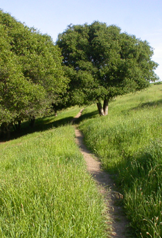

|
Oak
Knoll Neighborhood
Improvement Association
In
1982, OKNIA
consolidated two
pre-existing, non-chartered organizations to the north and south of
what is now
the Glenn W.
Daniel/King Estates Open Space Park (KEOS) in order to
protect the
land from development. The eastern slope, between Howard School and King Estates school,
was an existing
City of Oakland park established
in the early ‘60s. However
the vast
majority of land was privately owned. A land trust acquired
it and held
it
until the City could purchase it. Many
of our neighbors worked with Citizens of Oakland for Open Space (COOS)
to pass
Measure M (the KEOS property was purchased with Measure M funds).
Clyde Grimes, a retired
architect
with ties to University of California, Berkeley, recruited their
Landscape Architecture
Department to
do a master plan for the park as a masters thesis project. UC
students
and the
community worked over the course of a year to produce the master plan,
which was
vetted by all the City of Oakland departments
and then passed by City Council in 1998. KEOS
Master Plan.
|
|
Other
OKNIA projects and
achievements:
- 1989—established
a Clean Streets
Committee responsible for collecting litter on Fontaine Street and Golf Links Road. The
committee communicates directly with the Public Works Agency regarding
illegal dumping.
- 1999—spearheaded
a community
petition to alter the municipal code to allow dogs on leash in KEOS.
City Council approved on conditions that OKNIA provide dog
etiquette
education, signage regarding dog waste clean-up, bag dispensers, and
trash cans.
- 2000—established
a Park Committee
chaired by Marshall Hasbrouk, a biologist and specialist in habitat
restoration, which began a program of non-native eradication.
That
program continues with broom, salsify, Himalayan blackberry, cardoon,
and pampas grass on the current hit list.
- 2009—joined
forces with Volunteers
for Outdoor California (VOCAL) and the City of Oakland Public Works
Agency to cut a loop trail on the eastern and western slopes of the
park. Councilmember
Larry Reid made a
considerable donation to cover VOCAL’s costs.
Hundreds of
volunteers from Bay Area high schools, colleges, churches, and the
local community spent a weekend creating what is now a wonderful public
amenity. OKNIA
neighborhood volunteers now provide trail maintenance as needed.
- 1992—has had
representatives working
with the Oak Knoll Coalition since the closure of the Oak Knoll Naval Medical Center to ensure that
future development
at the site addresses and mitigates impacts on our community.
- 2000—participated
in a successful
challenge to the Leona Quarry development, which led to significant
improvements to the hydrology and geotechnical components of the final
environmental impact report.
- 2007—provided a
forum and
organization for the community surrounding the Holy Redeemer property
when its sale was announced.
- Over the past 22
years—has hosted
District 6 and 7 councilmembers, mayors, chiefs of police, county
supervisors, and Public Works representatives in an effort to inform
the community.
- 2014—became a
California nonprofit mutual benefit corporation.
- 2017—City
of
Oakland
Parks and Recreation Advisory Committee approved the establishment of
the Clyde Grimes Memorial Grove.
- 2019—became a
California
nonprofit public benefit corporation.
|
|